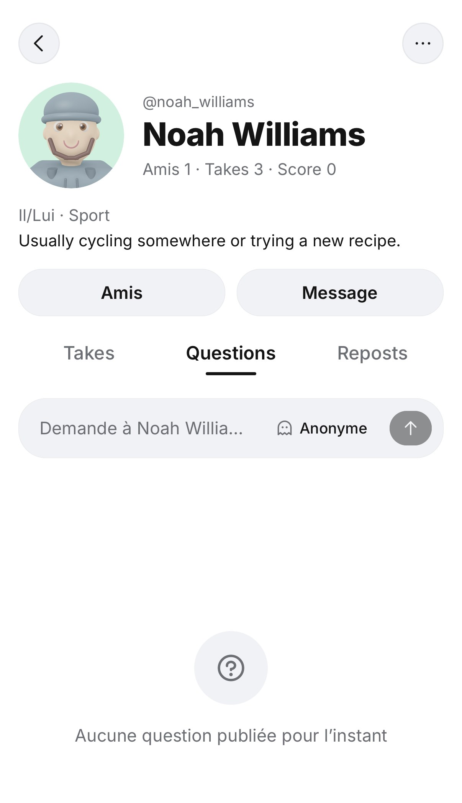
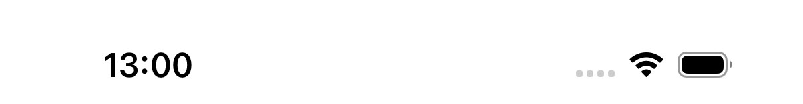
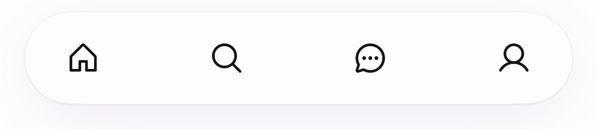
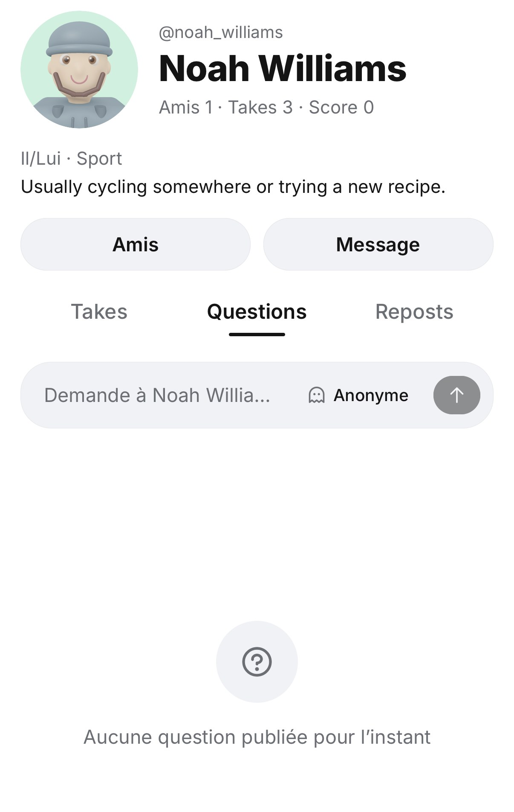
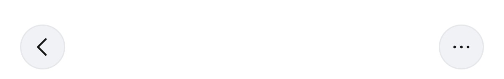
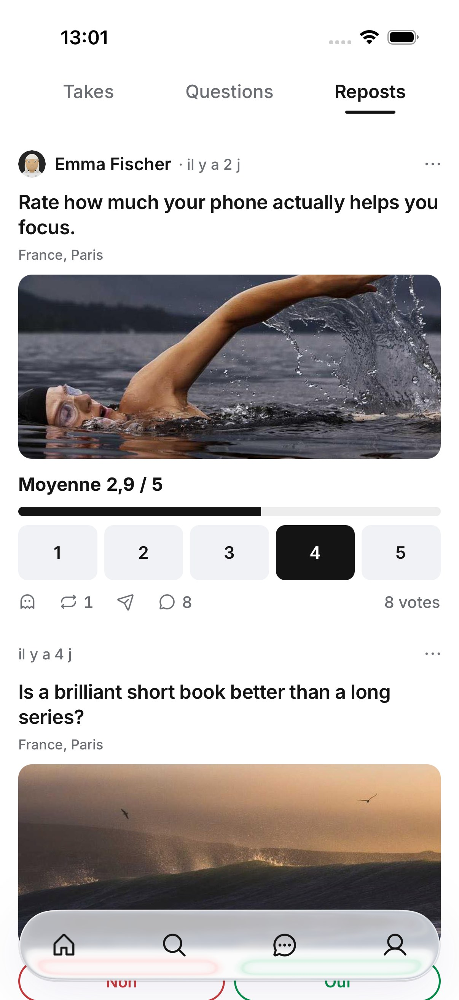
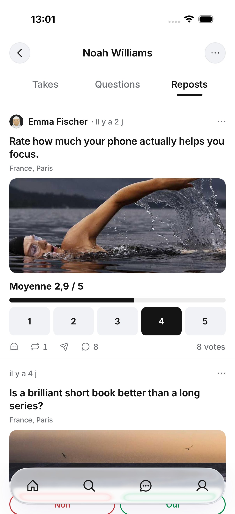

Le Retour reste en haut, sur le profil d’un autre
Maquette du 02/10/2026, faite sur de vraies captures iOS de la 2e boucle (profil d’un ami). Sur ton propre profil, rien ne change : il n’a pas de Retour.
Aujourd’hui, quand l’en-tête se replie, le bouton Retour part avec lui. Il ne reste en haut que les onglets, et la seule sortie est le glissé depuis le bord. Après : une barre reste fixée en haut, avec Retour et « … ». Les onglets s’épinglent dessous, et le nom apparaît dans la barre une fois l’en-tête replié, comme chez Instagram et X.





Replié, sur un vrai onglet Reposts


Comment font Instagram et X
La barre du haut est fixe. L’en-tête du profil défile, et les onglets s’épinglent en haut du contenu.
« fixed application top bar », « profile header scrolls away normally », « profile tabs stick at the top of the content »
instagram-profile-sticky-demo, un projet qui reproduit le profil d’Instagram.
X
L’en-tête rétrécit jusqu’à la taille d’une barre de navigation, puis reste collé en haut, avec le nom.
« When scrolling up, the header resizes down until it reaches Navigation Bar default size and then it sticks to the top of the screen. »
Implementing the Twitter iOS App UI (Think and Build).
Ce qui ne change pas
- Ton propre profil : pas de Retour, l’en-tête se replie comme aujourd’hui.
- Le repli lui-même, l’en-tête gardé d’un onglet à l’autre, et la position de chaque onglet.
- Le glissé depuis le bord pour revenir.
Trouvé par la 2e boucle (flow 18). Instagram et X gardent tous les deux le Retour visible, donc pas besoin du go d’Adam, selon sa règle.